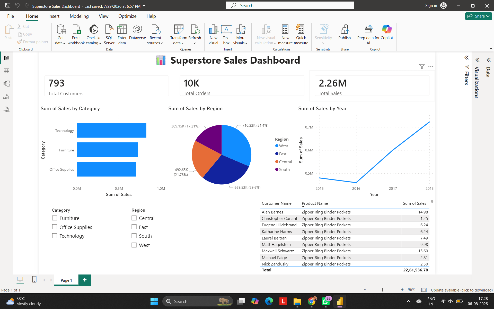

PROJECT 04
Superstore Sales Dashboard
An interactive Power BI dashboard analyzing sales, profitability, products, categories, regions and overall business performance.
DASHBOARD PREVIEW

ABOUT THE PROJECT
Sales data into business performance.
Developed an interactive sales dashboard to understand business performance using the Superstore dataset.
The analysis covers sales, profitability, products, categories, regions and sales trends.
Power Query was used for data preparation and DAX was used to create analytical calculations and KPIs.
KEY FEATURES
Sales Analysis
Analyze sales performance and trends across the business.
Profitability Analysis
Explore profit performance across products and categories.
Category Analysis
Compare performance across product categories.
Regional Analysis
Analyze business performance across regions.
TOOLS & TECHNIQUES
NEXT PROJECT
Student Performance Dashboard →